Music Video | April 11–12, 2026 | Shared Reference for Crew
This document defines the visual targets for both shoot days. All crew should review before shoot day.
Day 1 — The Subway, Nashville (Night Shoot): Cold, dark, teal/cyan institutional. The look is built entirely from Baxter's "Television" aesthetic. Think corridor fluorescents, metal surfaces, ghostly skin, deep blue shadows. Everything is cold.
Day 2 — Cortney & Luke's House: Warm, amber, intimate living room. The Linkin Park "Papercut" video is the template — table lamps, wallpaper, leather furniture, amber everything. The warmth is the antidote to Day 1.
The contrast between cold and warm IS the video's visual thesis. We intercut between the two worlds — the loneliness of the subway against the intimacy of the house. The overall mood sits squarely in the early 2000s dark alternative space. Think Evanescence era. Y2K but not playful — brooding, textured, atmospheric.
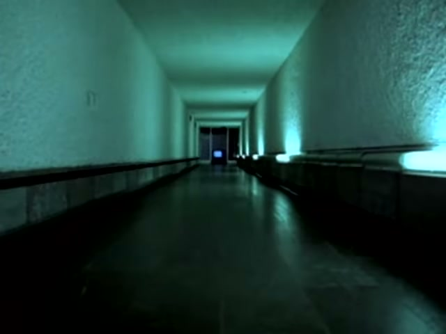
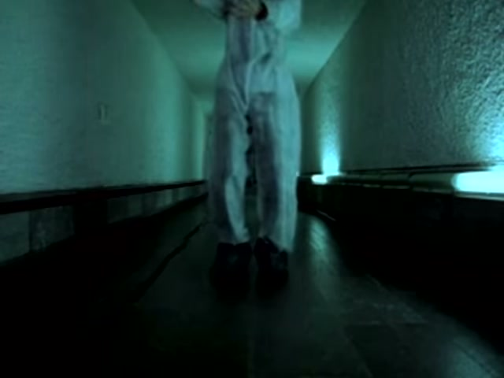


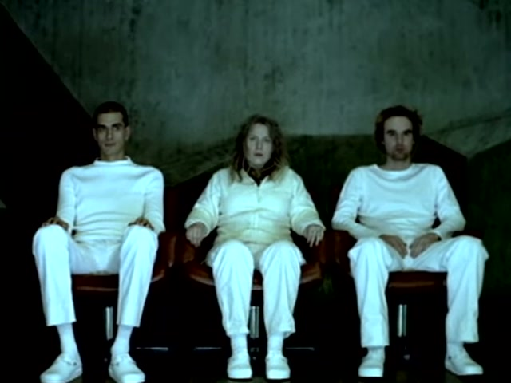
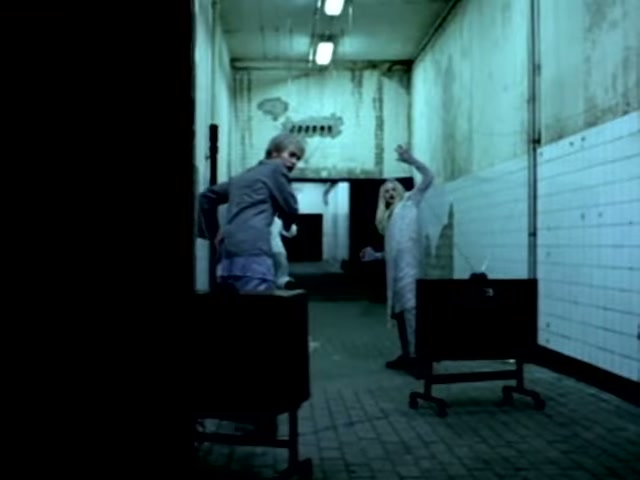


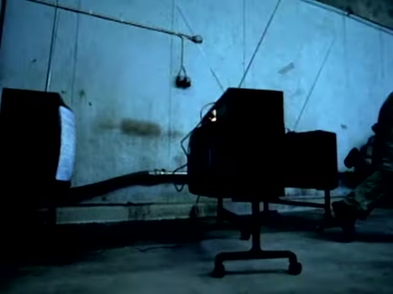
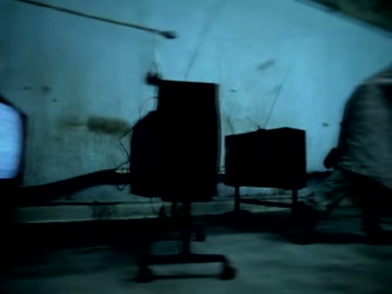
Scouted February 11, 2026 by Matt and Cortney. Paul: "Oh cool! Haven't seen this space. Looks great though!"
Cortney in the Car — Portraits


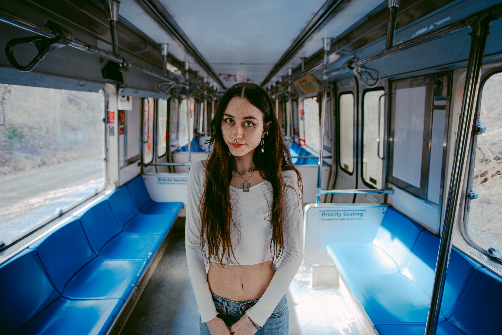


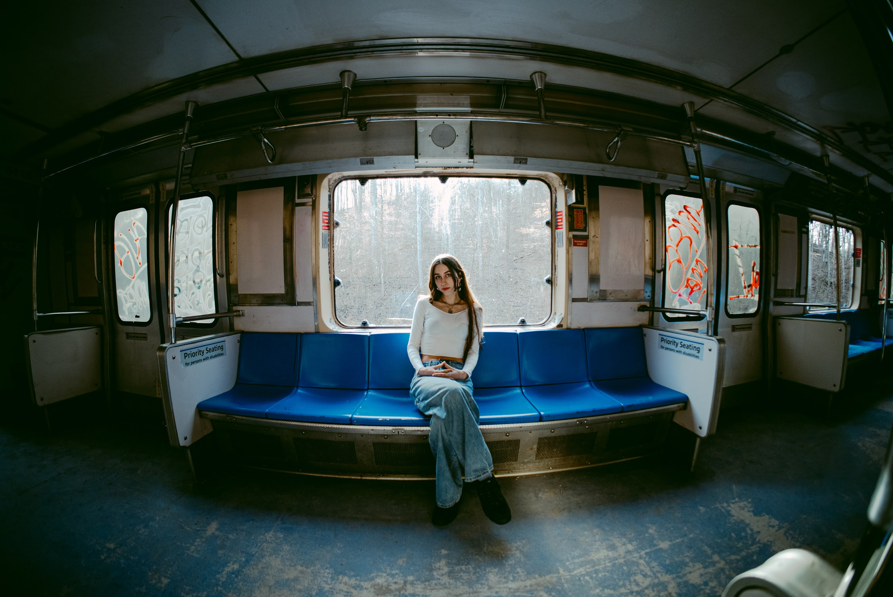
The Space — Interior + Exterior


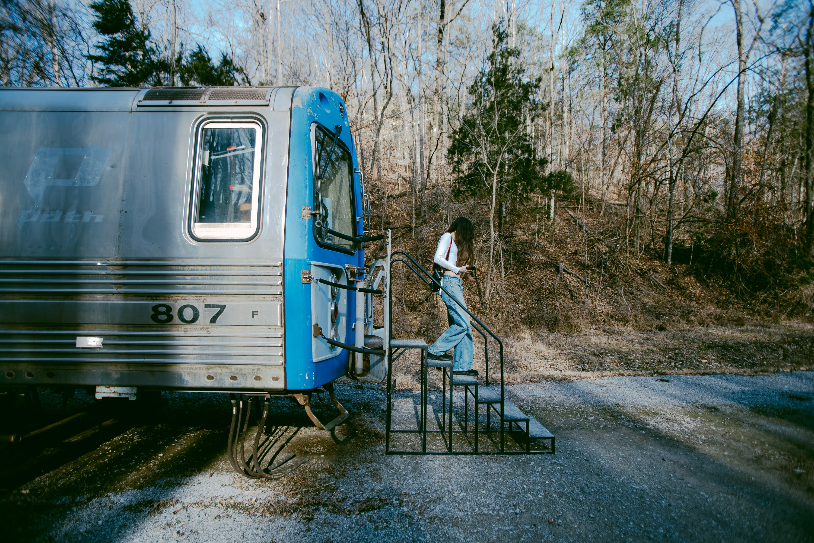
Details — Texture, Graffiti, Features
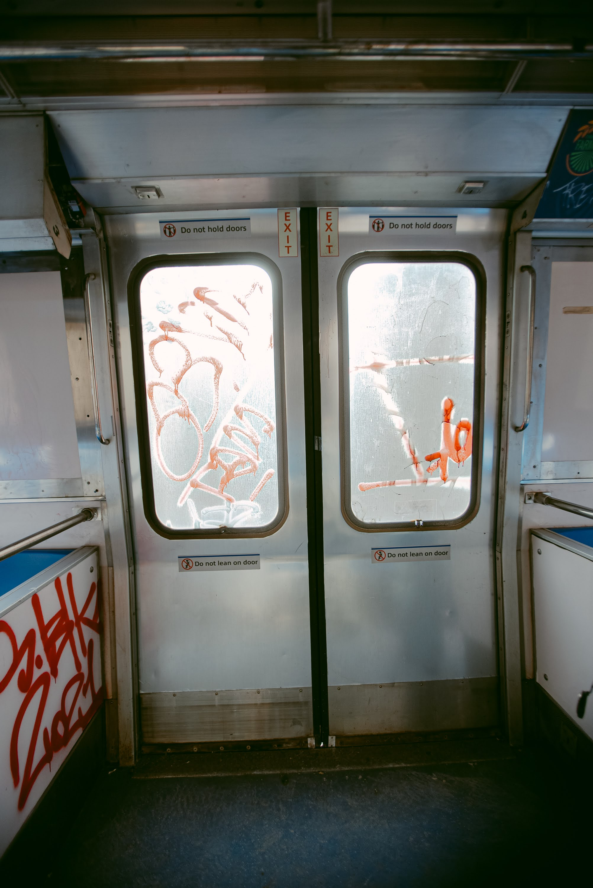
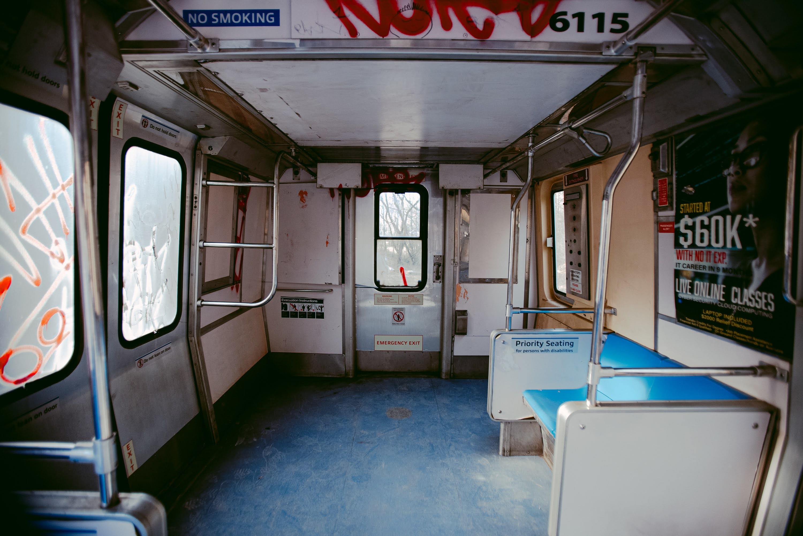


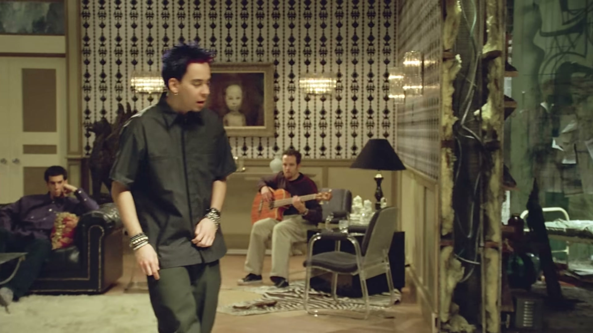
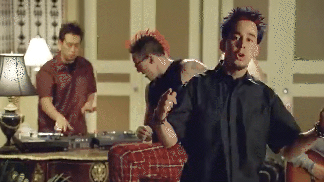


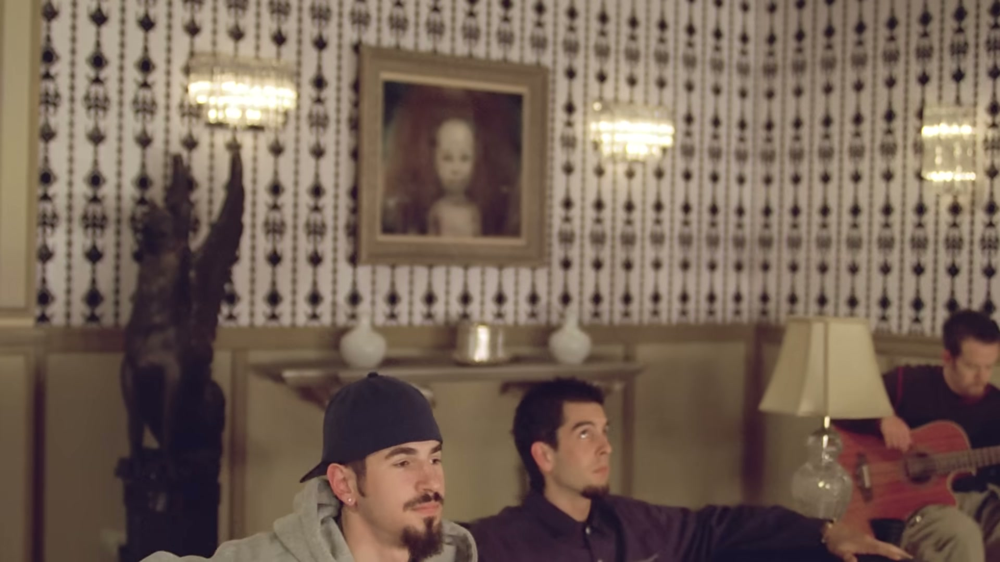